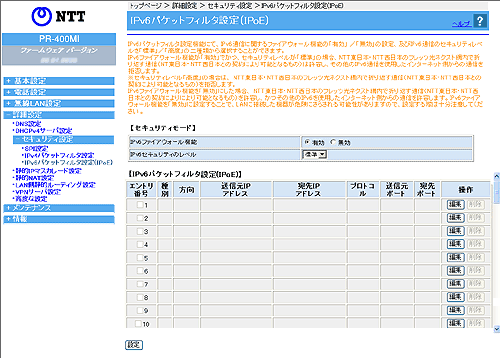

| ご利用のサービスにより画面が表示されない場合があります。 パケットフィルタにより、本商品を通過するパケットを制限することができます。 IPアドレス、プロトコル、ポート番号などの条件により、中継するIPv6パケットを通過あるいは廃棄するように指定することができます。 条件を適切に設定することで、特定のサービスやホスト間の通信を禁止するための簡易ファイアウォールを構築することができます。 複数の条件を設定した場合、優先順位の高いものから順に解釈され、判定が行われます。 「拒否」の条件に合致したパケットは廃棄され、「通過」の条件に合致したパケットのみが通過を許可されます。 |
|
| ※「Web設定」画面に表示されているボタンについての説明は こちら | |
|  | |
 IPv6ファイアウォール機能（初期値：有効）
IPv6ファイアウォール機能（初期値：有効） |
|
| IPv6ファイアウォール機能の設定を選択します。 | |
|
|
| IPv6セキュリティのレベル |
||
|
IPv6セキュリティのレベルを設定します。 |
||
| ・「標準」 NTT 東日本・NTT 西日本のフレッツ 光ネクスト網内で折り返す通信 （NTT 東日本・NTT 西日本との契約により可能となるもの）を許容します。 ・「高度」 NTT 東日本・NTT 西日本のフレッツ 光ネクスト網内で折り返す通信 （NTT 東日本・NTT 西日本との契約により可能となるもの）を拒否します。 |
||
| ※セキュリティレベルを「高度」に設定し、NTT 東日本・NTT 西日本のフレッツ 光ネクスト網内で折り返す通信（NTT 東日本・NTT 西日本との契約により可能となるもの）を行う場合には、個別に通信を許容するパケットフィルタルールを設定の上、ご利用ください。 | ||
|
|
| 編集したいエントリの行末にある［編集］をクリックする 「エントリ編集」の画面が表示されます。 編集後、［設定］をクリックする |
| 削除したいエントリの行末にある［削除］をクリックする |
| 有効/無効 |
||||||||||||||||||
| エントリの有効/無効を選択します。 | ||||||||||||||||||
| フィルタ種別 |
||||||||||||||||||
| フィルタリング条件に適合したパケットの取り扱いを選択します。 「通過」が指定された場合は、IPパケットは中継されます。 一方、「拒否」が指定された場合は、パケットは中継されることなく、廃棄されます。 |
||||||||||||||||||
| 通信方向 |
||||||||||||||||||
| 処理したいパケットの方向を選択します。 ・「WAN→LAN」 WAN側インタフェース→LAN側インタフェースの方向です。 ・「LAN→WAN」 LAN側インタフェース→WAN側インタフェースの方向です。 ・「両方向」 WAN側インタフェース←→LAN側インタフェースの方向です。 |
||||||||||||||||||
| 送信元IPアドレス |
||||||||||||||||||
| パケットの送信元IPアドレスに関するフィルタリング条件です。 ・「すべて指定」 すべての送信元IPアドレスをフィルタリング対象にします。 ・「アドレス番号指定」 指定された範囲のIPアドレスをフィルタリング対象にします。 |
||||||||||||||||||
| 宛先IPアドレス |
||||||||||||||||||
| パケットの宛先IPアドレスに関するフィルタリング条件です。 ・「すべて指定」 すべての宛先IPアドレスをフィルタリング対象にします。 ・「アドレス番号指定」 指定された範囲のIPアドレスをフィルタリング対象にします。 |
||||||||||||||||||
| プロトコル |
||||||||||||||||||
| フィルタするパケットのプロトコル番号を入力します。 ・「すべて指定」 すべてのプロトコルをフィルタリング対象にします。 ・「プロトコル名指定」 指定されたプロトコルをフィルタリング対象にします。 プロトコル名は、「TCP」「UDP」「ICMPv6」のいずれかを選択してください。 |
||||||||||||||||||
| 送信元ポート |
||||||||||||||||||
| 宛先ポート |
||||||||||||||||||
| パケットのTCPおよびUDPの送信元ポート番号および宛先ポート番号に関するフィルタリング条件です。 ・「すべて指定」 すべてのポートをフィルタリング対象にします。 ・「ポート名指定」 指定されたポート名の番号をフィルタリング対象にします。 ・「ポート番号指定」 指定された範囲のポート番号(1〜65535)をフィルタリング対象とします。 |
||||||||||||||||||
＜お知らせ＞
|
||||||||||||||||||
なお、プロトコルとポート番号の設定の組み合わせによるフィルタリング対象は以下のとおりです。
|
||||||||||||||||||
| セキュリティログ保存の可否 |
||||||||||||||||||
| セキュリティログを保存するか否かを選択します。 可をチェックすると、セキュリティログが保存されます。 |
||||||||||||||||||